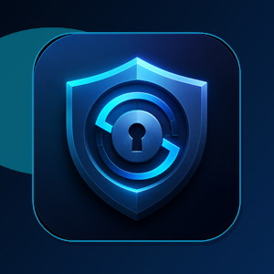
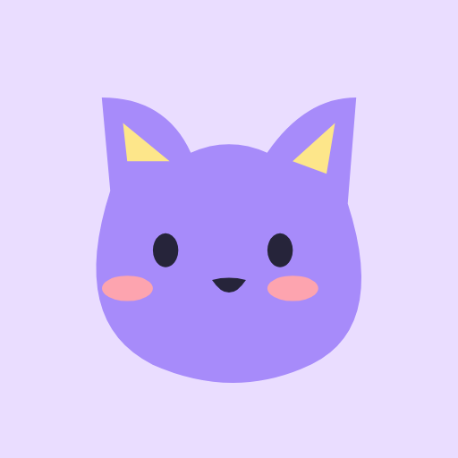

Full Stack Developer & Analista de Sistemas
Da lógica
à experiência.
Desenvolvo sistemas web, soluções financeiras e aplicativos Android e Windows. Conecto regras de negócio, dados e a experiência de quem usa.


01 / PROJETOS PESSOAIS
Ideias que viraram
aplicativos.
Produtos que desenvolvo além do trabalho corporativo, com diferentes plataformas, tecnologias e problemas para resolver.
02 / TRAJETÓRIA
Experiência que
se conecta.
Do desenvolvimento e da sustentação de sistemas web a produtos financeiros e projetos para o setor público.
03 / COMPETÊNCIAS
Ferramentas para
cada camada.
Tecnologias usadas na minha trajetória profissional e nos projetos pessoais, organizadas por área de atuação.
APIs REST · automação · testes · CI/CD · Scrum & Kanban · sustentação em produção
04 / SOBRE MIM
Uma visão completa
do desenvolvimento.
Sou Eduardo Costa Takeuchi, bacharel em Sistemas de Informação pela Universidade Federal de Uberlândia. Atuo desde 2019 no desenvolvimento de software, com experiência em aplicações web, produtos bancários e sistemas para o setor público.
Na Montreal, trabalho em projetos para a Prodemge. Fora do ambiente corporativo, desenvolvo aplicativos próprios para Android e Windows — uma oportunidade de trabalhar também com produto, interface e publicação nas lojas.
Bacharelado em Sistemas de Informação
Universidade Federal de Uberlândia · UFU
Agosto de 2015 a abril de 2023 · ConcluídoCurso de inglês avançado
Park Education · Park Idiomas
Concluído em 30 de junho de 2026Inglês: Duolingo Score 119, exibido no LinkedIn em outubro de 2026.
Cursos e aperfeiçoamento
FORMAÇÃO CONTÍNUAVAMOS CONVERSAR
Uma boa conversa.
Uma próxima solução.
Para conversar sobre desenvolvimento, projetos ou oportunidades profissionais, entre em contato.
eduardotakeuchi@outlook.com